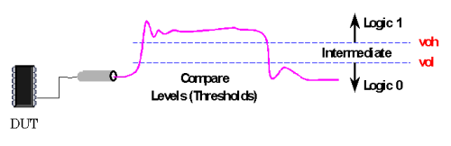

Compare Levels (Thresholds)
For output (o) and input/output (i/o) pins, the level setup defines the high (voh) and low (vol) compare thresholds for output signals.

For output (o) and input/output (i/o) pins, the level setup defines the high (voh) and low (vol) compare thresholds for output signals.
